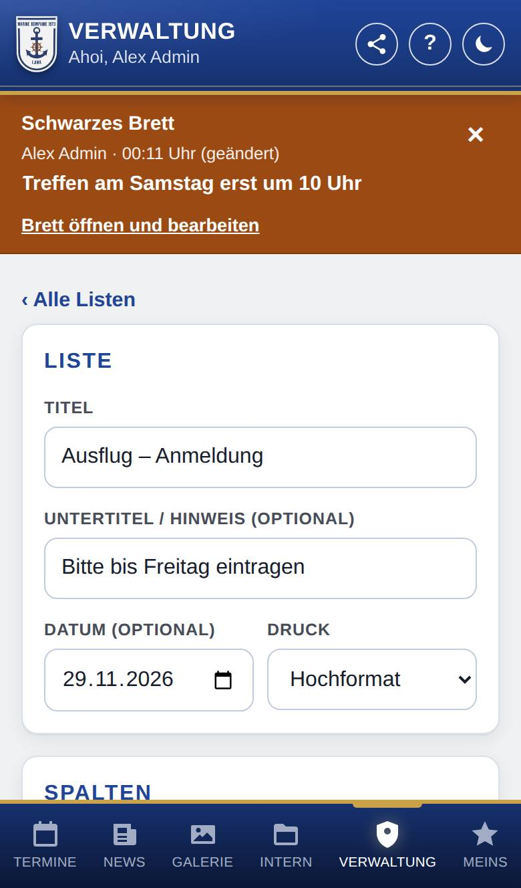
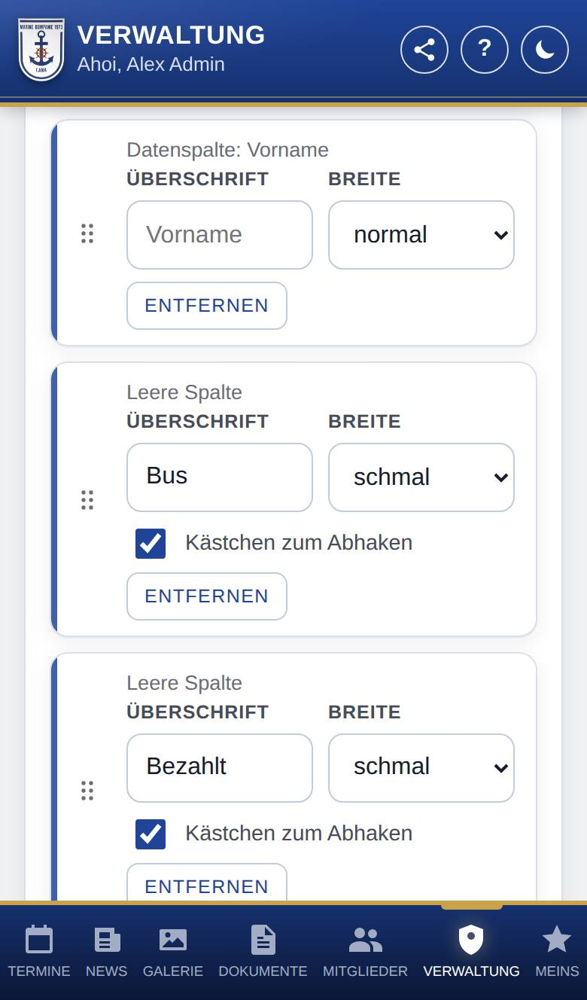
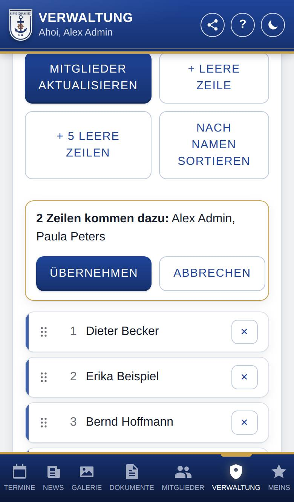
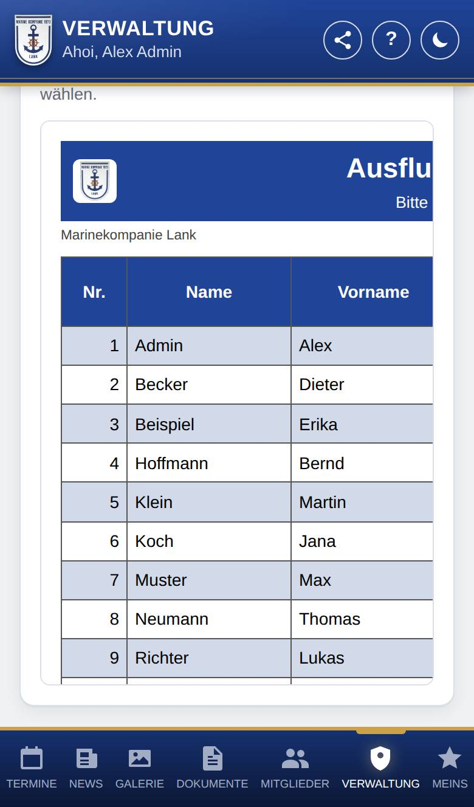

Liste bearbeiten
Nur, wenn Listen eingeschaltet ist.
Hier stellst du eine Liste zusammen: Titel, Spalten und Zeilen. Unten siehst du sie so, wie sie gedruckt wird, und druckst sie oder lädst sie als Datei für Excel herunter.

So öffnest du die Seite
Tippe unten auf Verwaltung, dann auf Listen. Tippe bei einer Liste auf Öffnen oder lege eine neue an.
Was du hier siehst
- ‹ Alle Listen: führt zurück zur Übersicht. Hast du noch nicht gespeichert, fragt die App, ob sie die Änderungen verwerfen soll.
- Liste: Titel, Untertitel / Hinweis (optional) (z. B. „Bitte bis Freitag eintragen“), Datum (optional) und Druck (Hochformat oder Querformat).
- Spalten: die Spalten der Liste, in ihrer Reihenfolge.
- Zeilen: die Zeilen der Liste mit Nummer und Name.
- Speichern: erscheint unten, sobald du etwas geändert hast.
- Ausgabe: Drucken / PDF, CSV herunterladen und darunter die Vorschau.
So gehst du vor
Spalten einrichten
Es gibt zwei Arten von Spalten:
- Datenspalten füllt die App mit den Angaben der Mitglieder: Nr. (zählt die Zeilen), Name, Vorname, Nachname, Rolle, Dienstgrad, Titel, Geburtstag, Adresse (die ganze Anschrift in einer Spalte), Straße und Nr., PLZ, Ort, Land, Handynummer, E-Mail, Punkte und Strafen (offen).
- Leere Spalten bleiben zum Ausfüllen auf Papier, z. B. „Bezahlt“ oder „Größe“.
- Wähle unter Datenspalte die Angabe und tippe auf + Datenspalte. Für eine Spalte zum Ausfüllen tippe auf + Leere Spalte.
- Trage bei Bedarf eine Überschrift ein. Ohne eigene Überschrift nimmt die App die Bezeichnung der Datenspalte.
- Wähle die Breite: schmal, normal oder breit. Sie bestimmt, wie viel Platz die Spalte im Ausdruck bekommt.
- Soll in einer leeren Spalte in jeder Zeile ein Kästchen stehen, setze das Häkchen bei Kästchen zum Abhaken.
- Um die Reihenfolge zu ändern, ziehe eine Spalte am Griff links (sechs Punkte) an die gewünschte Stelle. Entfernen nimmt eine Spalte heraus.
- Tippe auf Speichern.

Die Mitglieder in die Liste holen
- Tippe unter Zeilen auf Mitglieder aktualisieren. Ungespeicherte Änderungen speichert die App vorher.
- Die App zeigt, welche Zeilen dazukommen und welche gelöscht werden. Ist die Liste schon aktuell, meldet sie das nur.
- Tippe auf Übernehmen. Mit Abbrechen bleibt alles, wie es ist.

Eigene Zeilen hinzufügen
- Tippe auf + Leere Zeile oder + 5 leere Zeilen, z. B. für Gäste, die sich vor Ort eintragen.
- Schreibe einen Namen in die Zeile oder lass sie leer.
- Tippe auf Speichern.
Zeilen verschiebst du am Griff links. ✕ entfernt eine Zeile. Nach Namen sortieren ordnet die ganze Liste nach Nachnamen; leere Zeilen kommen ans Ende.
Drucken oder herunterladen
- Sieh dir unter Ausgabe die Vorschau an.
- Tippe auf Drucken / PDF. Für ein PDF wählst du im Druckdialog „Als PDF speichern“ als Drucker.
- Oder tippe auf CSV herunterladen. Die Datei öffnest du mit Excel oder einer anderen Tabellenkalkulation.

Gut zu wissen
- Mitglieder aktualisieren legt für jedes Mitglied eine Zeile an, das noch keine hat. Es löscht die Zeilen von Konten, die es nicht mehr gibt oder die kein Mitglied mehr sind. Gast, Ehemalige und Rollen, die nicht zur Kompanie gehören (z. B. Anwärter), kommen nicht in die Liste. Neue Mitglieder ordnet die App nach dem Nachnamen zwischen die vorhandenen ein.
- Eigene Zeilen bleiben beim Aktualisieren stehen. Entfernst du die Zeile eines Mitglieds, legt das nächste Mitglieder aktualisieren sie wieder an.
- Wird ein Konto gelöscht, bleibt seine Zeile ohne Namen stehen, bis du die Liste aktualisierst. Die App weist darauf hin.
- Zur Auswahl stehen nur Datenspalten, deren Bereich eingeschaltet ist und deren Angaben du in der App ohnehin sehen darfst. Die Rolle siehst du z. B. nur, wenn du die Mitgliederliste der Verwaltung siehst, Punkte nur, wenn du sie vergeben darfst. Geburtstage stehen nur in der Liste, wenn die Person sie für andere freigegeben hat, und nur mit Tag und Monat. Adresse, Handynummer und E-Mail siehst du nur mit dem Recht Persönliche Angaben sehen.
- Für Serienbriefe oder Adressetiketten nimmst du statt Adresse die einzelnen Spalten Straße und Nr., PLZ, Ort und Land und lädst die Liste als CSV herunter; jede Angabe steht dann in einer eigenen Spalte. Die Handynummer steht in der CSV mit 00 statt + (z. B. 0049 171 1234567), damit Excel sie unverändert übernimmt.
- Öffnet jemand die Liste, der eine Datenspalte nicht sehen darf, bleibt sie für ihn leer, auch im Ausdruck und in der Datei.
- Eine Liste hat höchstens 20 Spalten und 500 Zeilen.
- Hat jemand anderes die Liste inzwischen geändert, speichert die App nicht, sondern meldet das. Lade die Liste dann neu und trage deine Änderungen noch einmal ein.
- Gedruckt und heruntergeladen wird der Stand auf dem Bildschirm, auch wenn du ihn noch nicht gespeichert hast.
- Der Ausdruck hat oben einen Balken in der Farbe der Kompanie mit Logo, Titel und Untertitel, darunter den Namen der Kompanie, das Datum der Liste und den Stand (heutiges Datum). Der Tabellenkopf steht auf jeder Seite, unten rechts steht die Seitenzahl. In schmalen Spalten (außer Nr.) steht die Überschrift schräg, damit auch längere Überschriften passen. Spalten mit Namen sind mindestens so breit wie der längste Name.
- Als Dateinamen schlägt die App den Titel der Liste vor.